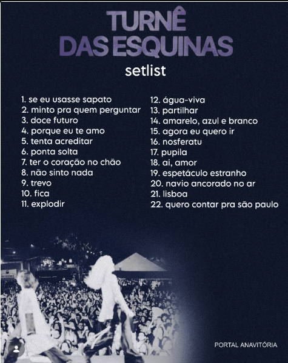

A turnê “Esquinas” da dupla Anavitória marcou uma fase de transição e amadurecimento na carreira delas. Inspirada no álbum O Tempo é Agora, a turnê trouxe músicas que falam sobre encontros, desencontros e as diferentes fases do amor, refletindo vivências mais reais e intensas. No palco, os shows ganharam uma produção um pouco mais elaborada, mas sem perder a essência intimista que caracteriza a dupla. Essa turnê mostrou um lado mais confiante e experiente das cantoras, consolidando ainda mais o sucesso delas no Brasil.set list turne das esquinas